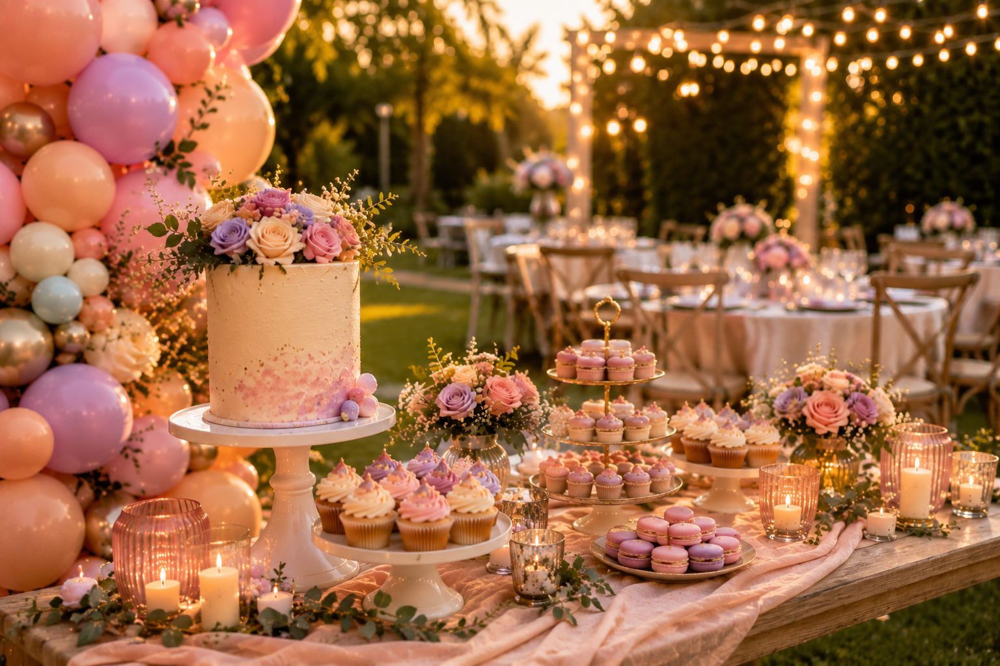
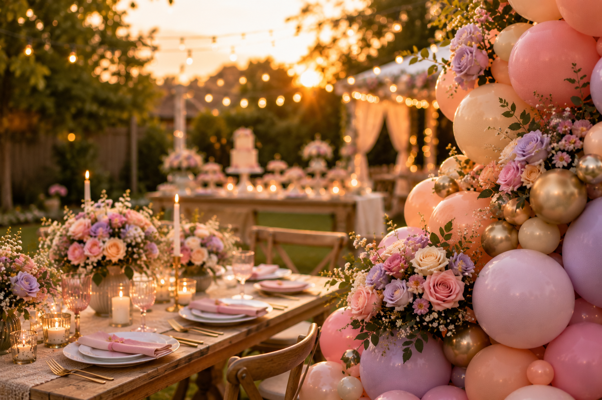

Summer parties in 2026 are moving in a clear direction — warmer, more considered celebrations that feel styled without feeling stiff. A beautiful colour palette, a few well-chosen focal points and the right lighting are doing most of the work. The days of stuffing every corner with decorations are largely behind us.
We’ve been busy with summer bookings since February and a few strong trends are standing out consistently — in the enquiries we’re getting, in what clients are pinning and saving, and in the direction styling is heading across the industry. Whether you’re planning a birthday, baby shower, bridal brunch or garden celebration across Kent, here’s what’s shaping the summer styling conversation this year.
1. Sunset Colour Palettes Are Leading the Way
The shift away from bright, high-contrast colour combinations has been happening gradually, but in 2026 it feels definitive. The most requested summer palettes right now are warm, tonal and layered — shades that blend naturally rather than fight for attention.
The most popular combinations we’re seeing include:
- Peach & blush
- Soft coral & dusty pink
- Butter yellow & warm cream
- Sage green & nude
- Lilac & soft blue
- Terracotta & warm sand
This lines up with the broader colour direction for 2026. Pantone named Mocha Mousse — a warm, earthy brown-beige — as their Colour of the Year, and the knock-on effect across party styling is exactly what you’d expect: a move towards warm neutrals, earthy tones and sunset-inspired palettes as the base of celebration designs.
What This Means for Balloon Garlands
Rather than alternating sharply between two or three colours, the best garlands right now use four to five shades that blend into each other. Balloon colours like champagne, blush, peach and soft terracotta laid in a tonal sequence look far more refined than a high-contrast palette — and photograph beautifully in natural light.
If you’re thinking about choosing a balloon colour palette, these warmer combinations are a strong starting point for almost any summer celebration.
2. Outdoor & Garden Party Styling Is Having a Moment
The appetite for outdoor celebrations has grown significantly — and so has the expectation that outdoor styling can look just as polished as an indoor venue setup. We’re seeing more requests for setups designed specifically to work in gardens, marquees, outdoor venues and patios across Kent.
The most popular requests for outdoor summer setups include:
- Organic balloon garlands framing garden arches, pergolas and marquee entrances
- Installations combined with festoon lighting and fairy lights for evening events
- Setups designed to photograph well in both afternoon and golden hour light
- Balloon styling combined with florals, candles and lanterns for a layered look
The overall direction is less “children’s birthday” and more “styled outdoor event” — even family birthday parties are taking cues from outdoor wedding and garden party aesthetics. A well-positioned balloon installation framed by greenery is one of the most effective summer styling choices, particularly when the light is right.
Worth Knowing About Balloons Outdoors
Outdoor setups do come with a few practical considerations — direct sunlight, heat and wind all affect how balloons behave. Our guide to having balloons at an outdoor party in the UK covers everything you need to think through before you book.
3. Dessert Tables as the Main Event
Dessert tables have made the jump from optional extra to the centrepiece of the entire setup. Guests expect them, they create a natural focal point for photographs, and — when styled well — they tie every element of the party together into one coherent look.
The summer dessert table ideas we’re seeing most often:
- Cupcake towers with matching seasonal colour palettes
- Macaron displays on tiered acrylic or wooden stands
- Fresh florals woven through the display at varying heights
- Acrylic risers creating different levels across the table
- Nature-inspired edible details — pressed flowers, botanical toppers, soft organic shapes
- Cupcake buttercream matched precisely to the balloon colour palette
The most polished tables we see share one thing: the client shared their balloon colour palette with their cake maker before anything was baked. When the colours, florals and styling details are coordinated from the start, the whole setup feels intentional rather than assembled.

For practical guidance on arranging all the elements, see our guide on how to style a dessert table for a children’s party.
4. Statement Backdrops Remain Essential
One thing that is definitely not going anywhere in 2026 is the statement backdrop. If anything, expectations have risen — guests want a dedicated spot for photos, and a professionally styled backdrop instantly elevates the whole event.
The most popular backdrop styles for summer 2026:
Organic shapes with florals woven through — especially effective against outdoor greenery.
Clean, editorial look. Works particularly well for bridal brunches and baby showers.
Fresh or dried florals framing a photo area. Always popular for summer garden setups.
Catches festoon light beautifully. Best for evening parties and indoor summer events.
A well-placed backdrop serves two purposes: it gives guests an obvious focal point for photos, and it creates the hero image of the party that gets shared and remembered long after the event.
5. Relaxed Luxury: The Summer Party Mood for 2026
If there’s one phrase that captures the overall direction of summer party styling this year, it’s relaxed luxury — the sense that thought has gone into every detail, without anything feeling formal or overdone.
In practice, this means:
- Warm lighting — festoon bulbs, candles, lanterns — rather than harsh overhead light
- Comfortable seating areas alongside the main party space
- Soft textures: linen, rattan, natural materials on the table
- A few high-impact styling moments rather than decorations spread across every surface
- Neutral table styling with one or two strong colour accents
- Elegant signage with personalised details
Less clutter, more intention. A beautifully styled dessert table and balloon installation in the right corner of a room will always outperform decorations spread too thin.
This approach also makes parties feel more expensive — not because more money has been spent, but because the choices are cleaner and more considered. Knowing what to leave out is just as important as knowing what to include.
6. Garden Parties, Redesigned
The traditional garden party — bunting, paper plates and a birthday cake from the supermarket — is being redesigned with a much more editorial look. Clients who are hosting at home are increasingly thinking about how the whole space can feel considered, not just the dessert table corner.
Modern garden party styling for 2026 includes:
- Luxury picnic setups with styled blankets and low-level table arrangements
- Layered tablescapes with linen napkins, mixed textures and bud vases
- Floral runners and mixed-height candles across dining tables
- Premium balloon installations framing the seating area or entrance
- Festoon lights overhead as the evening comes in
- Neutral tableware that lets the balloon and floral colours lead

The goal is to make even a home garden feel like a properly considered venue. It does not require an enormous budget — it requires a clear colour palette, a few key pieces and a willingness to edit.
7. Personalised Styling Is Now Expected
Personalised styling has shifted from optional upgrade to expected feature. Clients who book professional styling are increasingly including at least one or two bespoke elements that make the setup feel genuinely specific to the person being celebrated.
The most popular personalised additions:
- Welcome boards and custom signs with the guest of honour’s name
- Personalised balloon printing for milestone birthdays
- Name or age details on dessert table signage
- Bespoke cupcake toppers matching the theme and colour palette
- Colour-matched balloons chosen specifically for the recipient’s favourite shades
- Themed drink stations incorporated into the overall styling
Even one or two personalised touches — a name on a welcome board, bespoke toppers on the cupcakes — transforms a styled setup from beautiful to genuinely memorable. These details are often what guests comment on most.
Balloons & Beautiful Desserts — the Complete Summer Look
One of the most consistent things we see in the best summer setups is the combination of professional balloon styling with beautifully coordinated cakes and cupcakes. When the colours, florals and styling details are matched across both, the whole table feels like a single designed moment rather than separate elements placed together.
At Little Moment Studio, we work alongside our trusted cake partner Berrylicious Cakes → for clients who want coordinated desserts alongside their balloon display. From elegant summer cupcakes and pastel celebration cakes to themed dessert tables, it’s a combination that consistently produces the most polished results.
Frequently Asked Questions
Planning a Summer Celebration in Kent?
Little Moment Studio creates balloon displays and styled celebration setups for birthdays, baby showers, garden parties and more across Sittingbourne and Kent. We’d love to help you create something beautiful.